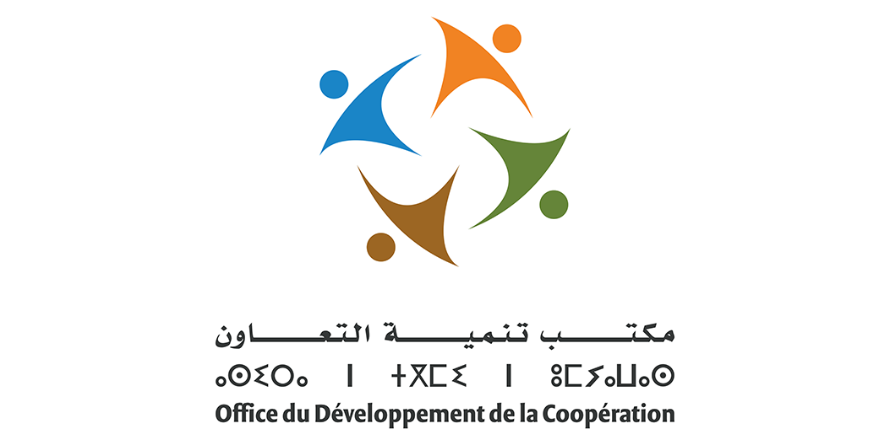
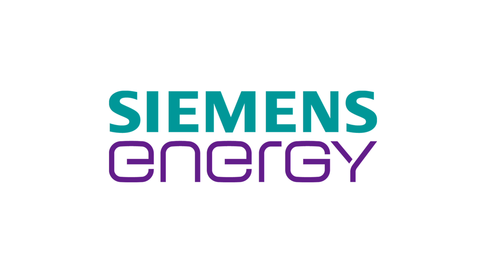

Le Contrat de Travail Temporaire (Intérim) au Maroc
Tout savoir sur le cadre légal du Code du Travail marocain, les cas de recours autorisés et la protection juridique de votre entreprise.
Spécialiste du recrutement et du travail temporaire au Maroc depuis 2017. Nous apportons des réponses rapides, flexibles et conformes à tous vos défis RH.

Découvrez nos solutions ciblées en Intérim, Informatique et Nettoyage.
Travail temporaire et délégation de personnel qualifié pour répondre à vos besoins urgents et pics d'activité.
Mise à disposition de profils informatiques : développeurs full-stack, ingénieurs réseaux, techniciens, digitalisation et gestion de projet.
Entretien professionnel des locaux, nettoyage industriel, désinfection et hygiène pour entreprises.
Un parcours simple, de votre demande jusqu'au suivi de la mission.
Vous nous décrivez le poste, le nombre de profils et la durée de la mission, par formulaire, téléphone ou WhatsApp.
Nous identifions et présélectionnons les profils adaptés à votre activité dans notre vivier.
Les collaborateurs sont délégués sous 24 à 48h. Contrats de mission et déclarations CNSS sont pris en charge.
Un interlocuteur dédié suit la mission et assure la gestion administrative et la paie.
Difficulté à recruter rapidement, complexité juridique ou surcroît temporaire : bénéficiez d'une délégation réactive.
Estimer mon besoin RHIntérim et missions dans l'industrie, la logistique, le tertiaire et les services dans tout le Maroc.
Consulter les offres & Postuler






Sélectionnez votre secteur et votre effectif pour estimer immédiatement la disponibilité de vos équipes au Maroc.
Découvrez nos solutions sur-mesure et notre capacité à intervenir rapidement pour vos besoins de délégation au Maroc.
Créée en 2017 à Rabat, PRO C2S s'engage au quotidien pour offrir aux entreprises et aux talents la flexibilité et la sécurité juridique qu'ils méritent.
Un interlocuteur RH dédié qui comprend vos exigences métier et s'adapte à vos urgences sur le terrain.
Respect strict de la législation marocaine du travail, traçabilité totale et transparence contractuelle.
Capacité à déployer des collaborateurs qualifiés en quelques heures pour répondre à vos surcroîts d'activité.
Accompagnement continu de chaque intérimaire pour garantir une productivité immédiate sur vos sites.
Années d'expérience
Entreprises partenaires
Intérimaires placés / an
Taux de satisfaction
Des résultats mesurables et une conformité sans compromis pour les entreprises et les talents au Maroc.
"Lors de notre pic annuel de production, PRO C2S a mobilisé 35 opérateurs qualifiés sous 48 heures. Dossiers administratifs impeccables, conformité CNSS totale et zéro interruption de notre chaîne de fabrication."
"La réactivité de PRO C2S sur nos plateformes logistiques garantit la continuité de nos expéditions. Suivi de paie sans retard et interlocuteur RH joignable en permanence en cas d'urgence opérationnelle."
"Délégué en mission d'intérim de 6 mois comme gestionnaire administratif, le suivi humain et la rigueur de PRO C2S m'ont permis de décrocher mon embauche définitive en CDI chez l'entreprise cliente."
Restez informés du cadre légal du travail temporaire au Maroc, des stratégies de recrutement agile et des bonnes pratiques RH.
Tout savoir sur le cadre légal du Code du Travail marocain, les cas de recours autorisés et la protection juridique de votre entreprise.
Découvrez les mécanismes de délégation rapide en 24h/48h pour absorber les surcroîts d'activité sans alourdir la masse salariale fixe.
Les meilleures pratiques pour réussir son intégration en entreprise, faire la différence sur le terrain et transformer l'intérim en CDI pérenne.
Pourquoi et comment déléguer la complexité des bulletins, des contrats et des déclarations sociales pour une conformité rigoureuse.
Des réponses claires pour les entreprises et les candidats sur le fonctionnement de PRO C2S.
Grâce à notre vivier actif et réactif dans tout le Maroc, nous sommes capables de mettre à disposition des profils qualifiés sous un délai moyen de 24h à 48h selon la spécificité des postes.
PRO C2S applique rigoureusement le Code du Travail marocain. Nous prenons en charge la totalité des obligations légales : déclarations CNSS, contrats de mission, assurances AT et gestion de la paie sans aucun risque pour l'entreprise utilisatrice.
C'est direct et instantané : il vous suffit de cliquer sur l'offre de votre choix et de transmettre votre candidature par email ou par WhatsApp à notre équipe RH dédiée. Votre profil sera traité sous 24h.
Oui, PRO C2S déploie des équipes opérationnelles sur l'ensemble du territoire national : Tanger, Kénitra, Fès, Oujda, Marrakech, Agadir et les régions du Sud.
Prenez contact directement avec notre direction pour un partenariat stratégique, un rendez-vous ou une collaboration d'entreprise.
Imm. 69, 4ème Étage, Av. Patrice Lumumba, Hassan - Rabat
Remplissez ce formulaire pour échanger avec notre direction ou planifier un rendez-vous.